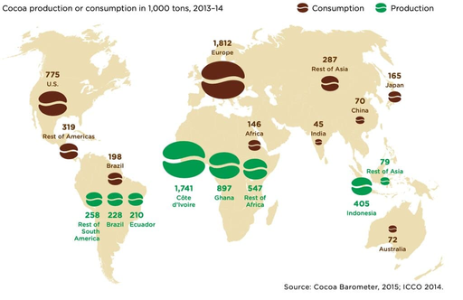
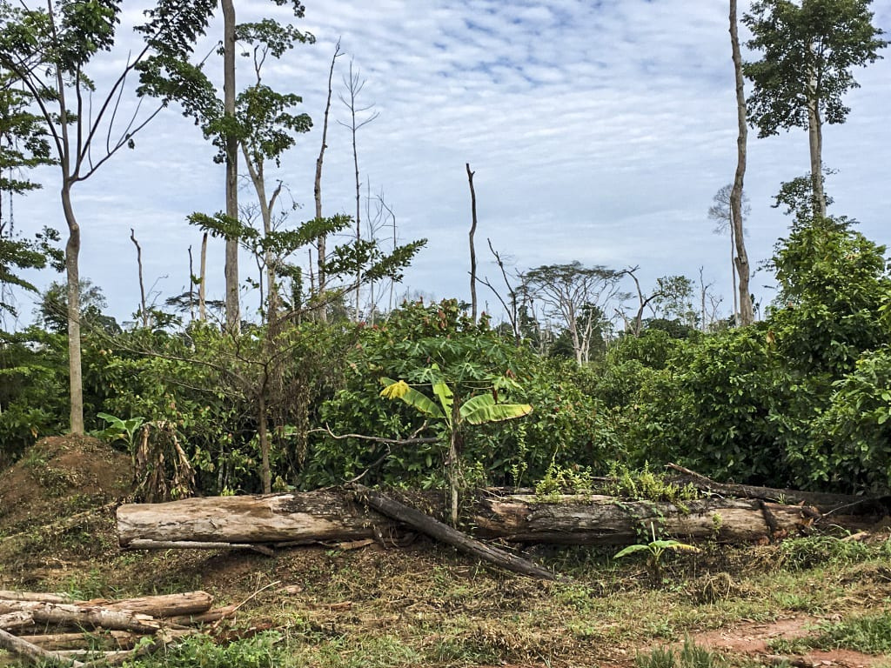
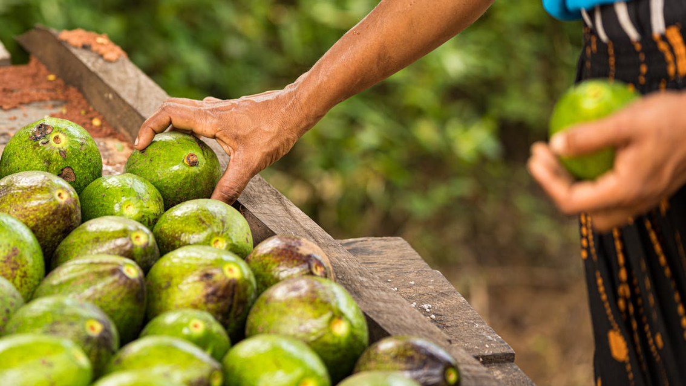

It is that time of year once again. As economies worldwide experience massive shocks, the Western world celebrates "holidays." Economists are particularly interested in this period, analyzing the festive season through the view of utility maximization. It was in 1993 that Yale economist Joel Waldfogel published a controversial study in which the concept first emerged, titled "The Deadweight Loss of Christmas." Waldfogel argued that giving gifts is inefficient due to givers' inability to precisely assess the receiver's preferences, resulting in a 10%-33% loss in the valuation of the present.
Despite the fact that later literature has argued that this view disregards how gift-giving creates social value—such as a parent choosing to gift a child a classic novel rather than cash (Ruffle and Tykocinski, 2000; Tremblay and Tremblay, 1995)—the concern with allocative efficiency overlooks a much more significant argument. The actual deadweight loss of the holiday season lies not in a recipient valuing a sweater less than its price, but with an abuse of the concept in the substantial, unaccounted negative externalities that human consumption imposes on the earth, especially in developing regions.
The actual deadweight loss of the holiday season lies not in what a gift costs, but in the substantial negative externalities that human consumption imposes on the earth.
Consumption and the Global Business Cycle
The holiday season represents more than a social tradition; it constitutes a significant demand shock that influences the global business cycle. Wen (2002) argues that substantial fluctuations in consumption demand during Christmas are a primary driver of overall economic fluctuations. For instance, retail sales in the United States go up in the fourth quarter and down in the following first quarter, which causes "seasonal cycles" that have a significant impact on overall output changes.
In many cases, the environmental costs incurred at the site of production are omitted in the global demand that extracts resources from the periphery to the core—from a raw-material supplier in the underdeveloped world to the final good of influential economic hubs. For that matter, chocolate, a seasonal favorite treat, provides a suitable political economy example of this dynamic that is neither more nor less severe than any other. Chocolate consumption spikes during the festive season, yet few consumers understand the environmental price paid at the source.

Deforestation in the Supply Chain: The Cocoa Paradox
The supply chain transporting cocoa from West Africa entails deforestation as a significant, unrecognized negative externality. This phenomenon is intrinsically linked to the "festive delight" of the Global North; as demand for holiday treats surges, it increases pressure on land in the Global South. The extent of this environmental deadweight loss is alarming: in the past 60 years, Côte d'Ivoire, the leading cocoa producer globally, has experienced a loss of almost 80% of its forest cover.
A new geospatial analysis by Renier et al. (2023) reveals that from 2000 to 2019, over 2.4 million hectares of forest were deforested or degraded as a result of cocoa farming. This totals 125,000 hectares every year, accounting for 45% of the country's total deforestation over that time frame. This deforestation is systematic; it follows a distinct economic cycle referred to as the "cocoa loop." To fulfill the endless global demand, production continually adapts to capitalize on the "forest rent" of recently cleared, fertile land.

The industry historically began in the East, depleted the land, transitioned to the Center-West, and has now migrated to the mountainous West. The quest for new land stimulates considerable migration, as farmers—53% of whom are recent foreign migrants in these areas—transform the few remaining forests into cocoa farms. This continuous displacement of communities and destruction of ecosystems is the hidden cost of the world's chocolate consumption.
Opacity of Global Trade
What prevents the market from pricing this destruction? The answer lies in the supply chain's deficiency in transparency. Large producers dominate the vast majority of exports, yet they don't know much about the origins of their beans. Only 43.6% of the Ivory Coast's cocoa exports in 2019 could be linked to a particular supplier.
"Indirect sourcing" or "unknown sourcing" channels are responsible for the introduction of more than 55 percent of the cocoa that is sold on the market. Indirect sourcing occurs when exporters purchase from intermediaries without knowing the farm of origin, whereas unknown sourcing occurs when non-transparent exporters trade without providing supplier information. Consequently, deforestation constitutes a component in the supply chain—one that remains invisible to both producers and consumers.
The scale of this opacity is staggering. In 2019, European Union imports alone were associated with 838,000 hectares of deforestation over the previous 15 years. Farm-level traceability is still poor, especially for businesses dedicated to the Cocoa and Forests Initiative (CFI), as evidenced by the fact that just 40% of the farms supplying CFI traders have been mapped in 2019, covering only 22% of all exports.

Concluding Remarks
The deadweight loss that unfolds following Christmas reveals that there is a big market failure around the world. The price of a chocolate bar does not include the loss of biodiversity and the destruction of rainforests in protected areas like the Haut-Sassandra Classified Forest, where cocoa production diminished forest cover from 93% to less than 28%.
To fix this problem, we need to adopt major improvements to the political and economic systems which govern global trade. Sustainability commitments are hollow without complete traceability and transparency, in which corporations disclose not only their direct suppliers but also their indirect sourcing networks. Until the true environmental cost of chocolate is priced into the market, the "cocoa loop" will continue to destroy the forests of the Global South.
To put it briefly, the consumption patterns we engage in are the driving force behind a complex global system currently motivated by the loss of natural resources in the developing world. This is something that we must acknowledge as "we" celebrate the season.
Selected references
- Barima, Y. S. S., Konan, G. D., Kouakou, A. T. M., and Bogaert, J. (2020). Cocoa production and forest dynamics in Ivory Coast from 1985 to 2019. Land, 9(12), 1–22.
- Barima, Y. S. S., Kouakou, A. T. M., Bamba, I., Sangne, Y. C., Godron, M., Andrieu, J., and Bogaert, J. (2016). Cocoa crops are destroying the forest reserves of the Classified Forest of Haut-Sassandra (Ivory Coast). Global Ecology and Conservation, 8, 85–98.
- Renier, C., Vandromme, M., Meyfroidt, P., Ribeiro, V., Kalischek, N., and zu Ermgassen, E. (2023). Transparency, traceability and deforestation in the Ivorian cocoa supply chain. Environmental Research Letters, 18.
- Ruffle, B. J. and Tykocinski, O. (2000). The deadweight loss of Christmas: Comment. The American Economic Review, 90(1), 319–324.
- Tremblay, C. H. and Tremblay, V. (1995). Children and the economics of Christmas gift giving. Applied Economics Letters, 2(9), 295–297.
- Waldfogel, J. (1993). The deadweight loss of Christmas. The American Economic Review, 83(5), 1328–1336.
- Wen, Y. (2002). The business cycle effects of Christmas. Journal of Monetary Economics, 49(6), 1289–1314.